7 月 17 日：VideoRAE 等视觉表征论文归档
本页按日期归档近期论文，保留优先级、主题、来源与方法线索，方便回看同一批工作的研究脉络。
先读 VideoRAE。把冻结视频基础模型的多尺度表征压成可重建、可生成的视频 latent，直接连接视频 SSL backbone 与生成模型 latent。 其余论文按 P1/P2 与主题顺序扫读，重点看方法图、消融设置和是否能迁移到通用视觉表征。
论文索引
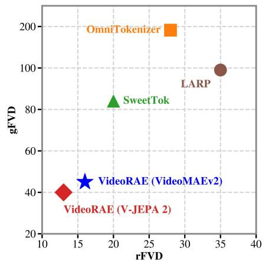
VideoRAE: Taming Video Foundation Models for Generative Modeling via Representation Autoencoders
高相关；详见方法、贡献和实验边界。
方法：把冻结视频基础模型的多尺度表征压成可重建、可生成的视频 latent，直接连接视频 SSL backbone 与生成模型 latent
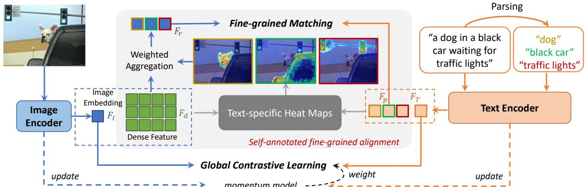
Fine-grained CLIP fine-tuning with self-annotated region alignment
高相关；详见方法、贡献和实验边界。
方法：只用 image-text pairs 给 CLIP 做 region-phrase 自标注对齐，目标是补足 CLIP 的细粒度 dense representation
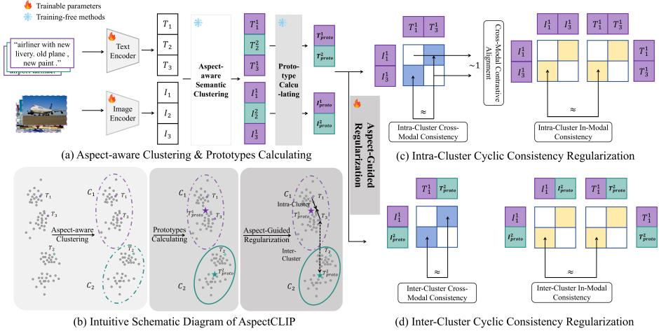
AspectCLIP: Optimizing CLIP Representation Space via Aspect-Guided Consistency Regularization
高相关；详见方法、贡献和实验边界。
方法：从 caption 只描述图像某一 aspect 的事实出发，重写 CLIP 表征空间的 consistency regularization
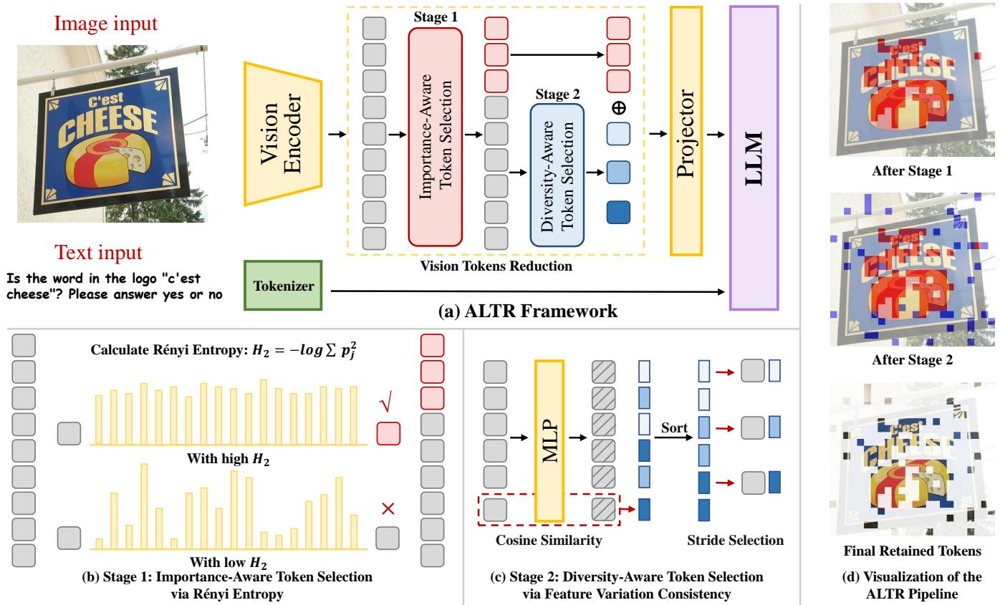
Attention-Free and Lightweight Token Reduction for Efficient Vision-Language Models
高相关；详见方法、贡献和实验边界。
方法：不依赖 attention map，用 entropy 与一致性信号保留重要且多样的 visual tokens
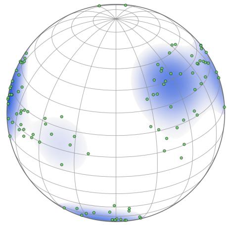
The Hyperspherical Geometry of CLIP Latent Space: A Semantic Mixture Model
高相关；详见方法、贡献和实验边界。
方法：把 CLIP embedding space 解释为 hyperspherical semantic mixture，而不是高斯空间
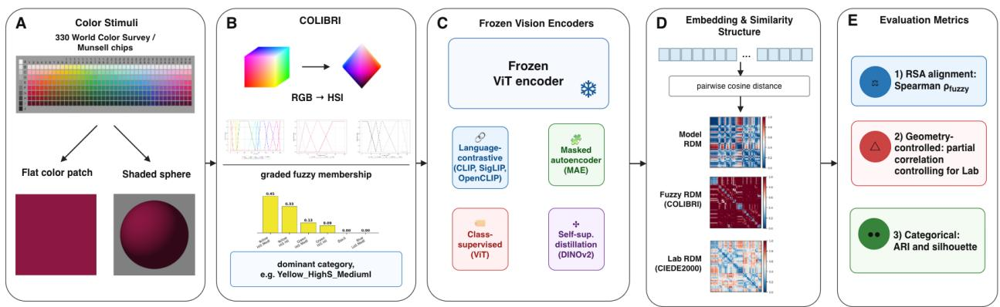
Beyond Color Geometry: Evaluating Human-Like Color Representations in Vision Models
中高相关；详见方法、贡献和实验边界。
方法：用人类 fuzzy color categories 检查 ViT/MAE/语言监督模型如何编码颜色
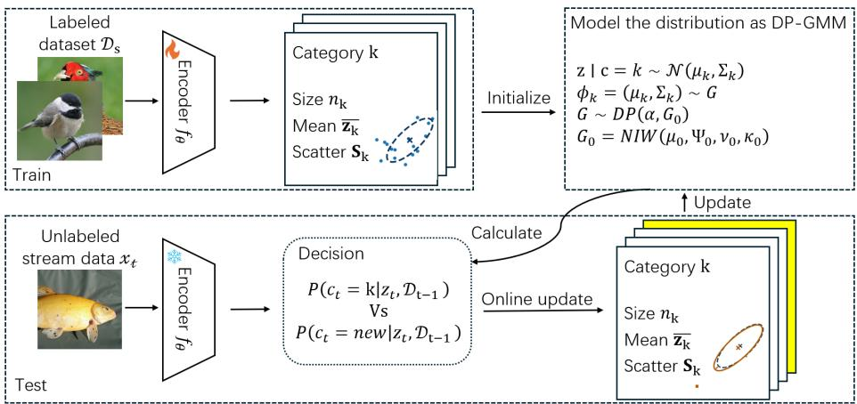
DP-BOA: Dirichlet-Process Birth-or-Assign for On-the-Fly Category Discovery
中高相关；详见方法、贡献和实验边界。
方法：在线判断新样本属于已知类还是应生成新类，和开放世界表征聚类/novel class discovery 相关
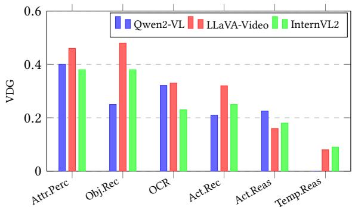
Accuracy Without Grounding: Diagnosing Visual Dependency Dissociation in Video LLM Benchmarks
中高相关；详见方法、贡献和实验边界。
方法：证明视频 LLM benchmark accuracy 与真实视觉依赖可以分离，提出 Visual Dependency Gap
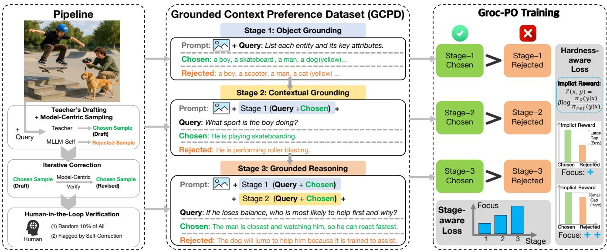
Groc-PO: Grounded Context Preference Optimization for Truthful Multimodal LLMs
中高相关；详见方法、贡献和实验边界。
方法：把偏好优化的监督粒度前移到 grounding/context 阶段，减少多模态推理中的视觉幻觉传播
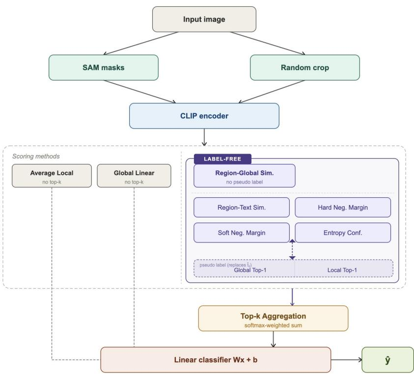
CLIP-Guided Label-Free Discriminative Region Scoring for Fine-Grained Classification
中相关；详见方法、贡献和实验边界。
方法：用 CLIP 与 SAM 做无标签细粒度 region scoring，适合看训练免费局部证据选择
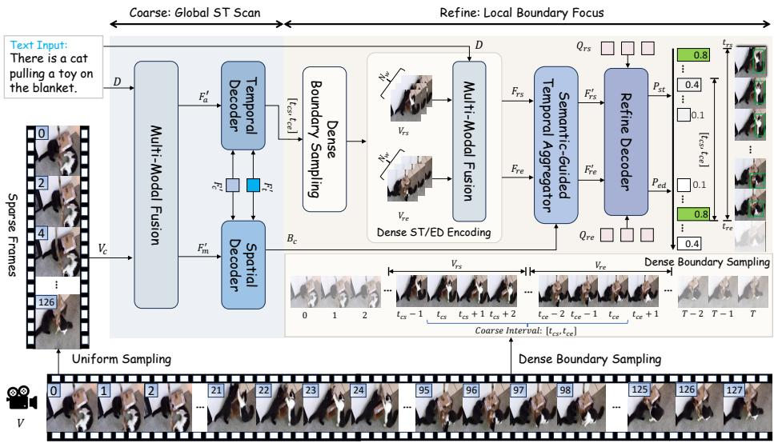
ScanFocus: A Coarse-to-Fine Framework for Spatio-Temporal Video Grounding
中相关；详见方法、贡献和实验边界。
方法：面向长视频 grounding 的 coarse-to-fine 视觉语言融合和边界细化
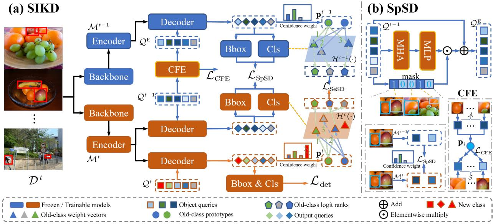
Symbiosis-Inspired Knowledge Distillation for Incremental Object Detection
中相关；详见方法、贡献和实验边界。
方法：用 spatial/semantic symbiosis 做增量目标检测蒸馏，关注旧知识如何以共享表征保留
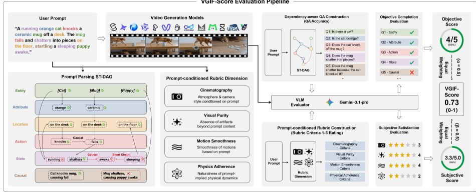
VGIF-Score: Interpretable and Diagnostic Evaluation of Spatio-Temporal Instruction Following in Video Generation
中相关；详见方法、贡献和实验边界。
方法：提出自动化可解释的 video generation instruction-following 诊断